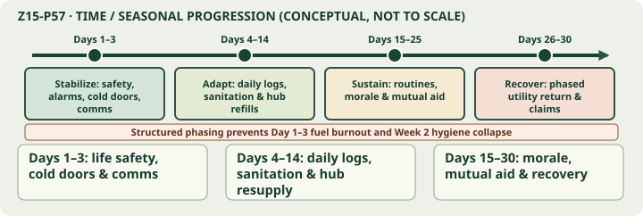

Z15-P57 · Disaster scenarios · New manuscript
Phase a 30-day regional disruption into stabilization, adaptation, and recovery
Replace panic or burnout during multi-week regional supply/utility disruptions with a structured three-phase household operating framework.
When it applies · Extended regional ice-storm blackouts, major flood isolation, pandemic/supply-chain shocks, or multi-week rural disruptions.
Equipment · Written 30-day household logbook, daily inventory tracker, NOAA/AM-FM radio, and community resource list.

Actions
- Organize prolonged emergencies intentionally into THREE operational phases, beginning with Days 1–3 (Stabilize): secure life safety, CO/smoke alarms, shelter warmth/cooling, fridge/freezer outage triage, family check-ins, and zero indoor combustion.[D18, U01, F04]
- Shift purposefully into Days 4–14 (Adapt): Establish daily water/food/battery pacing logs, reliable sanitation and hygiene stations, neighborhood wellness check-ins, and safe resupply trips to county distribution hubs or open towns.[D18, U13, U16]
- Transition cleanly into Days 15–30 (Sustain & Recover): Maintain health/morale routines, monitor reserve replenishment triggers with 48-hour buffers, coordinate mutual aid and county/FEMA assistance claims, and execute safe phased utility restoration as infrastructure returns.[D18, D16, U01]
Failure recognition · Burning through all stored generator fuel, fresh batteries, and favorite pantry foods during Days 1–3 with no written pacing log for Weeks 2–4.[D18, U01]
Verify · Confirm household transitions deliberately from Day 1–3 emergency response into steady Day 4–30 logging, sanitation, and community resupply cadence.[D18]
Stop or change course · Any unresolvable medical depletion, unsafe indoor temperature, or collapsed sanitation ends home stay immediately in favor of relocation or county aid.[D18, U17]
Evidence and editorial notes
- D16 · FEMA / Ready.gov · Financial Preparedness and Vital Records (current web edition)
- Section: Vital Documents, Cash Reserves, Insurance, and Post-Disaster Recovery · Conditions: 30-day resilience planning and post-disaster household recovery
Support: Keep waterproof physical and encrypted offline digital copies of IDs, medical lists, prescriptions, insurance policies, deeds, and emergency contacts alongside small-denomination cash so household transactions and assistance claims survive bank/internet outages.
Limitations: Online-only cloud portals are inaccessible during power and telecom outages. · Conflicting evidence: None; critical pillar of prolonged 30-day household resilience.
Editorial note: Grounds documentation, cash liquidity, and recovery staging cards. · Specialist reviewer: Emergency management and household continuity
Primary source · checked 2026-11-24 - D18 · FEMA / Ready.gov · Drought (current web edition)
- Section: Extended 30-Day Resilience, Supply Pacing, and Mutual Aid · Conditions: Multi-week regional disruption, supply-chain interruption, or prolonged utility recovery
Support: Manage 30-day household resilience through structured inventory tracking, conservative water/fuel/battery rationing, scheduled sanitation and hygiene routines, daily neighborhood wellness checks, and early transition to community distribution hubs before critical reserves run dry.
Limitations: Self-reliance plans must remain integrated with municipal/county relief and medical care—isolation without community check-ins increases mortality during prolonged disasters. · Conflicting evidence: None; frames 30-day scenarios realistically without doom-isolationism.
Editorial note: Anchors Z15 30-day operations, rationing logs, and community mutual-aid cards. · Specialist reviewer: Emergency management and community resilience
Primary source · checked 2026-11-24 - F04 · USDA / FDA / CDC · Food Safety During Power Outage (current web edition)
- Section: Refrigerated food and power outages · Conditions: Refrigerator starts cold; keep door closed
Support: An unopened refrigerator keeps food cold for about four hours. Follow the per-item discard chart after loss of temperature control. Never taste to test.
Limitations: Door openings accelerate warming; appliance thermometer is needed to verify temperature. · Conflicting evidence: None; retained for Z15 reconstruction.
Editorial note: Maintains five-pack integrity. · Specialist reviewer: Food safety and household preparedness
Primary source · checked 2026-11-24 - U01 · FEMA / Ready.gov · Power Outages (current web edition)
- Section: Power Outages > Preparing and Responding Safely · Conditions: Residential utility electrical outages of hours to days
Support: Keep phones/medical batteries charged, maintain flashlights instead of candles, unplug sensitive appliances to protect against restoration surges, and verify backup power plans for electrically dependent medical devices.
Limitations: Home outage durations vary widely by grid damage; extended winter outages require heat/evacuation contingencies. · Conflicting evidence: None; aligns with CPSC and NFPA.
Editorial note: Establishes household outage baseline and medical-power priority in Z13. · Specialist reviewer: Emergency management and electrical safety
Primary source · checked 2026-11-24 - U13 · CDC · How to Make Water Safe in an Emergency (2024-09-19)
- Section: Sanitation, Hand Hygiene, and Emergency Waste Containment · Conditions: Household water-service or sewer interruption
Support: Maintain separate handwashing stations using safe water and soap (or alcohol hand rub when hands are not visibly soiled), line emergency bucket toilets with heavy bags and tight lids when sewer service is unusable, and never mix bleach with ammonia or acids.
Limitations: Improvised sanitation is a temporary containment bridge until municipal sewer or licensed sanitation resumes; follow local health department disposal orders. · Conflicting evidence: None; prevents fecal-oral outbreaks and toxic chloramine gas mixing.
Editorial note: Core household sanitation and chemical-mixing boundary in Z13. · Specialist reviewer: Environmental health and sanitation specialist
Primary source · checked 2026-11-24
Current assessment · A04-U13 (2026-11-25) · Open: support partial or missing (A04): The original water section cannot qualify bucket toilets or all chemical conditions. Water/hygiene and sanitation/chemical controls need partial separation and local sanitation review. Limits: Specialist review PENDING (Environmental health and sanitation specialist); publication HOLD. All release decisions pending.
Current assessment · W2C-E035 (2026-11-28) · Narrowed: later guidance limits this claim: Alcohol rub is a fallback only when soap and water are unavailable; it does not replace handwashing after toilet, diaper or vomit tasks or before food. Limits: The baseline U13 text is kept for history; cards now cite U26 and U27 for the hand-hygiene boundary. - U16 · FEMA / Ready.gov · Emergency Alerts (current web edition)
- Section: Household Emergency Communications During Grid and Cell Outages · Conditions: Residential power, internet, and cellular tower disruptions
Support: Maintain a battery/crank NOAA Weather Radio, spare power banks, car-charger backups, written contact cards, and local AM/FM broadcast station lists so warnings and utility restoration updates remain accessible without Wi-Fi or cell data.
Limitations: Cordless landline handsets and VoIP routers fail immediately when house power drops unless separately backed up. · Conflicting evidence: None; links Z13 household comms to Z15 disaster alerts.
Editorial note: Grounds home communications continuity during extended blackouts. · Specialist reviewer: Emergency communications specialist
Primary source · checked 2026-11-24 - U17 · FEMA / Ready.gov · Evacuation (current web edition)
- Section: Household Evacuation Thresholds When Utilities Fail · Conditions: Uninhabitable indoor temperatures, sewage backup, persistent CO alarm, or structural/utility hazard
Support: Establish clear pre-agreed exit triggers to relocate to a warming center, hotel, or relatives BEFORE indoor freezing, carbon monoxide alarms, medical-device battery exhaustion, or impassable blizzard roads trap occupants.
Limitations: Waiting until indoor pipes burst or batteries hit zero removes safe travel options. · Conflicting evidence: None; aligns with T13 and E14.
Editorial note: Defines objective household abandonment thresholds in Z13. · Specialist reviewer: Emergency management and cold-weather operations
Primary source · checked 2026-11-24
Source lineage · FEMA Ready.gov Multi-Hazard Resilience; new manuscript · Classification · New manuscript.